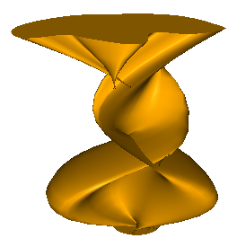
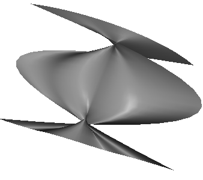

sgCObject* sgSurfaces::SplineSurfaceFromSections(const sgC2DObject** sections, const double* params, int sections_count, bool isClose)
Description:
Creates a smoothed surface or a solid from three or more clips. To draw an object from two clips you can use the LinearSurfaceFromSections() function.
Arguments:
sections - array of clips,
params - array of the parameters of the base line points on which a new object is to be created; this parameter defines the spiral degree of the new object and takes the value from 0 to 1. The point on the object can be found using the GetPointFromCoefficient() function. This parameter is ignored if the corresponding object from the section array is not closed.
isClose - whether to close to a solid in case firstSide and secondSide are flat and closed curves without self-intersections.
Returned value:
Returns the pointer to a newly created object. If the function fails NULL is returned.
Explanation:
See more about curve points parameters values in the description of the LinearSurfaceFromSections() function.
Special attention should be paid to the objects orientation. A new object is created by moving the end point of a line segment along two path curves. But along each curve each end point moves in the curve direction. You can change the object direction round using the ChangeOrient() function.
The wrong orientation may cause such results:
 |
 |
In case of unclosed objects only objects orientation is considered.
See also: